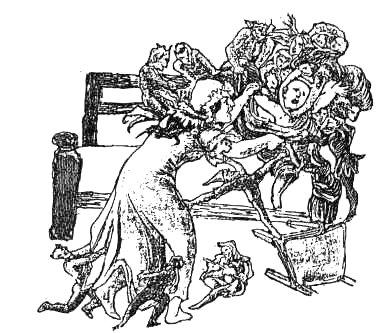
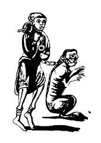
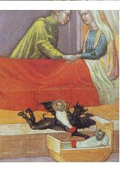
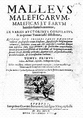

L'enfant supposé
The Changeling
Dialecte de Cornouaille
|
Cependant La Villemarqué, dans l'édition de 1845, avait cité comme informatrice "une paysanne de Nizon appelée Fañche Mélan [identifiée par Donatien Laurent comme étant Françoise Droal, épouse Guyader]. L'origine de cette erreur est expliquée dans la notice préliminaire du chant Gwenc'hlan . - Un conte similaire, "Histoire du cornikan de Coatbrezel", a été publié dans la Revue de Bretagne tome IV -3ème livraison (2ème année) Mars 1834, Rennes (pp. 118 - 122) par Corentin Tranois. - Selon Francis Gourvil ("La Villemarqué", p.353), "il s'agit d'une pièce dont les éléments existent dans le fonds populaire des contes et traditions en prose , mais non sous forme de chanson. Son titre breton "Ar bugel lec'hiet" est d'ailleurs incompréhensible." Cependant, il le range dans la catégorie des " chants inventés ", page 94 de son "Villemarqué (et page 395, où il figure parmi les "pièces historiques neutres", tenues par Loth et Luzel pour "inventées"). Il ne dit pas non plus quel titre il aurait préféré. Le Père Grégoire traduit "enfant supposé" par "bugel roet dre avoultriezh gant ur c'hwreg d'he ozac'h evel pa vez-eñ e dad" ou "bastard lakaet e-touez bugale lejitim heb gouzout d'an ozac'h"! |
 |
However, in the 1845 edition La Villemarqué had named another informer, to wit "a Nizon country woman called Fañche Mélan [whom Donatien Laurent identified with Françoise Droal, wife of Guyader]. For the cause of this mistake see preliminary notice to the song Gwenc'hlan . - A similar tale, "The cornikan of Coatbrezel", was published in "Revue de Bretagne" book IV -3rd release (2nd year) March 1834, Rennes (pp. 118 - 122) by Corentin Tranois. - Francis Gourvil (in "La Villemarqué", p.353) writes: "This piece is made up of elements existing in tales and oral traditions in prose, but not as a song. Its Breton title "Ar bugel lec'hiet" will not be understood by an average Breton speaker." However he includes it into the category of " invented songs ", on page 94 of his "Villemarqué (and page 395 where it is quoted among other "neutral historical pieces", considered as "invented" by Loth and Luzel). Nor does he state what title he would have prefered. The Reverend Gregory of Rostrenen translates in his Dictionary "substituted child" as "bugel roet dre avoultriezh gant ur c'hwreg d'he ozac'h evel pa vez-eñ e dad" or "bastard lakaet e-touez bugale lejitim heb gouzout d'an ozac'h"! |
Ton
La mineur, peut-être hypodorien à l'origine.
D'après l'arrangement de Friedrich Silcher
| Français | English |
|---|---|
|
1. Marie, son cœur est affligé
|
1. Pretty Mary is so sorry;
|
Cliquer ici pour lire les textes bretons.
For Breton texts, click here.

|
Résumé
En son absence un beau bébé est volé à sa jeune mère et remplacé par un horrible nabot boulimique et muet. Sur le conseil du recteur, la mère provoque l'étonnement du "changeon" en prétendant préparer le repas de dix laboureurs dans une coquille d'œuf. Il récite une formulette qui trahit son grand âge. Alors elle le fouette et ses cris alertent sa véritable mère, une korrigane, qui restitue l'objet de son larcin et repart avec son rejeton. Alors qu'il avait reconnu le caractère presque universel de cette tradition populaire ou s'exprime une hantise maternelle peut-être vieille comme le monde, le collecteur la présente, à partir de 1845, comme un bien propre du monde britonnique. Une querelle littéraire qui l'oppose à la traductrice de poèmes gallois anciens (cf. Gwenc'hlan ), n'est peut-être pas étrangère à ce revirement. De ce fait, La Villemarqué n'a pas vu l'incidence tragique de ce thème exploité, à leur manière par les théologiens, surtout germaniques, à partir du 12ème siècle. Une tradition galloise Voici, pour commencer, un extrait des "Gobelins de Grande Bretagne, Folklore gallois, Fées et mythes, Légendes et traditions" de Wirt Sikes (1836 - 1883), publiés à Londres chez S. Low, Marston, Searle et Rivington en 1880. "J'ai souvent entendu ce conte au Pays de Galles et il ressemble toujours, pour l'essentiel au chant de La Villemarqué. Ce qui suit est la traduction presque mot à mot d'un récit recueilli dans le Radnorshire (un comté jouxtant celui de Montgomery). On notera une tendance moderne à localiser les événements: 'Dans la paroisse de Trévéglis près de Lanidloes, dans le Comté de Montgoméry, il y a un chalet de berger que l'on appelle le "Lieu de la Querelle", pour avoir servi de cadre à une querelle hors du commun. Il était habité par un homme et sa femme qui eurent des jumeaux dont la mère s'occupait avec soin et tendresse. Quelques mois plus tard, la maîtresse de maison avait dû se rendre chez une proche voisine pour une affaire importante. Bien qu'elle n'eût pas à aller bien loin, elle répugnait à laisser ses enfants tout seuls dans leur berceau, ne serait-ce qu'une minute, car sa maison était isolée et on racontait toutes sortes d'histoires à propos des gobelins ou "Tylwyth Teg" qui hantaient la région. Elle s'absenta cependant et revint dès que possible. Mais en retournant chez elle, elle fut terriblement inquiète de voir, alors qu'il n'était que midi, quelques 'elfes en jupon bleu'. Le cœur battant, elle se précipita chez elle. Mais elle constata avec soulagement que tout semblait tel que lorsque elle avait quitté la maison. Cependant, au bout d'un certain temps, les bonnes gens commençaient à se demander pourquoi les jumeaux ne grandissaient pas et conservaient une taille de nains. L'homme en concluait que les enfants n'étaient pas de lui et sa femme affirmait le contraire, ce qui provoqua entre eux la grande querelle qui donna son nom au lieu-dit. Un soir, la femme qui avait le cœur gros, se décida à aller trouver un sorcier, persuadée que cela était de son ressort. Or le temps des moissons était proche pour le seigle et l'orge, c'est pourquoi le prud'homme lui dit: "Quand tu prépareras le dîner des moissonneurs, vide une coquille d'œuf et fais-y bouillir du potage, puis prends-la et franchis la porte comme pour aller porter leur repas aux ouvriers. Ecoute ce que les jumeaux diront. S'ils disent des choses qui dépassent l'entendement des enfants, rentre dans la maison, prends-les et vas les jeter dans les flots du Llyn Ebyr (Lac des Abers), tout près de chez toi. Mais s'ils ne disent rien de spécial, ne leur fais pas de mal". Et lorsque ce fut le jour des moissons, la femme suivit ce conseil et elle sortit pour écouter. Elle entendit l'un des enfants dire à l'autre:
Gweliz mez kent gweled dervenn. Gweliz ui kent gweled yar wenn. Biskoazh na weliz berviñ boued ar vederien E-barzh bluskenn ui-yar!] Sur ce, la mère rentra dans la maison, saisit les deux enfants et alla les jeter dans le Lac des Abers. Aussitôt les gobelins en habits bleus accoururent pour sauver leurs nains et la mère retrouva ses enfants. C'est ainsi que fut mis fin à la querelle entre les deux époux." Sources écrites galloises de l'oralité bretonne? Dans les "notes" qui suivent le chant, La Villemarqué signale l'existence de cette tradition galloise et cite presque mot pour mot le texte gallois ci-dessus. Dans la première édition, celle de 1839, il cite ses sources: Il en déduit, sans doute trop hâtivement, A ce sujet, le rapprochement que fait La Villemarqué avec un passage de la Vie de Merlin de Calédonie (Vita Merlini Caledoniensis, 1150) semble tout à fait pertinent. Il écrit dans ses notes et éclaircissements: "Par un hasard extraordinaire, Geoffroy de Monmouth met les paroles que [l'on va] lire dans la bouche de son barde sorcier."
"Si cette remarquable coïncidence n'était pas l'effet du hasard, elle prouverait que le moine gallois qui faisait ainsi parler Merlin connaissait le chant populaire et ce serait pour notre ballade une nouvelle preuve d'antiquité." . Le moins qu'on puisse dire, en effet, c'est que Geoffroy de Monmouth semblait connaître soit le conte, soit le dicton à propos du chêne! Cette évocation de Merlin par La Villemarqué conduit certains commentateurs à ranger ce chant parmi les très suspects "chants arthuriens du Barzhaz" (qui auraient inspiré les romans de Chrétien de Troyes, Béroul, Thomas, Robert de Boron, etc.) et à rapprocher l'Enfant supposé de Lancelot du Lac, fils du roi Ban de Bénoïc, enlevé encore enfant par la fée Viviane. Cela semble bien hasardeux! D'une façon générale, il semble qu'en dépit de la réputation des chœurs d'hommes gallois, le répertoire de chants populaires anciens de la Principauté soit bien moins riche que celui de la Basse-Bretagne. De sorte que les correspondances entre les chants vivants dans les domaines brittoniques des deux côtés de la Manche semblent fort rares. En revanche des parallèles existent entre la tradition orale bretonne et la littérature ancienne galloise ( Submersion d'Is , Yannick Scolan , certains motifs de Merlin , la laie des Vêpres des grenouilles et la chasse à la truie merveilleuse "Twrch Trwyth" des "Mabinogion"...) et justifient les nombreuses citations qu'en fait La Villemarqué. Sans doute faut-il voir là un phénomène d'origine religieuse, à savoir le résultat inégal des efforts de l'Eglise catholique post-Trentine d'une part, et de l'Eglise méthodiste d'autre part, pour remplacer la tradition par leurs propres chants. Au Pays de Galles les "imposteurs fanatiques et les prédicateurs populaires illettrés [étaient parvenus à...] faire disparaître des divertissements innocents tels que le chant, la danse, etc. pratiqués de tout temps, [...faisant du] Pays de Galles l'un des plus ennuyeux du monde." ( Edward Jones , "Barde" du roi Georges IV, 1752-1824, dans "The Bardic Museum of primitive British poetry", 1802). Dans le livre de Wirt Sikes, le large extrait ci-dessus est précédé de la légende bretonne de La Villemarqué. Il est amusant de constater que dans l'édition de 1845, ce dernier ne cite plus ses sources livresques, mais affirme que la légende "nous [=lui] a été racontée par les paysans du Glamorgan". Il enjolive sans doute la vérité car ce membre de phrase disparaît en 1867. La Villemarqué au Pays de Galles On a vu, en effet, à propos de la Prophétie de Gwenc'hlan que La Villemarqué avait été chargé d'une mission auprès de l'Eisteddfod d'Abergavenny. Les 8 membres de la mission arrivèrent le 4 octobre 1838 à Abergavenny et La Villemarqué fut logé chez Lady Hall l'épouse du futur ministre des travaux publics dont le prénom Benjamin allait servir de surnom au carillon de Westminster "Big Ben". Il entonna, en réponse au discours de bienvenue du Rév. Price, un chant en un gallois mâtiné de breton (ou l'inverse) qui déchaîna cependant un enthousiasme délirant. Dans son rapport sur la littérature du pays de Galles au Ministre de l’Instruction Publique, La Villemarqué n’hésite pas à soutenir que la langue de Taliesin était exactement celle que parlent aujourd’hui les paysans de Basse-Bretagne. Il relate le moment solennel où "il vint à entonner un chant de bienvenue, dans l’idiome de son pays, et se vit compris et salué des applaudissements d’une foule en délire, soulevée toute entière comme par un effet électrique, aux accents d’une voix qu’ils reconnaissaient après treize cents ans !" » Mais il omet de dire qu’une traduction en anglais en avait été faite et distribuée juste avant par le Révérend Price … Cela lui valut d'être reçu le 11 octobre dans l'ordre des Bardes sous le nom de "Barz-Nizon". Les éditions de 1839 et de 1845 du Barzhaz s'ouvrent d'ailleurs sur un épigramme, une citation des "Triades de l'Île de Bretagne" rédigée selon l'orthographe de Le Gonidec :
L'Introduction propose en outre des citations de poèmes gallois de Taliésin, travestis de la même façon et présentés comme du "breton du VIème siècle", avec en regard du "breton moderne" qui en diffère à peine et qui est parfaitement incompréhensible. Dans ses "Contes populaires des anciens Bretons" (1842, page 355), La Villemarqué affirmera, en s'appuyant sur une transcription tout aussi incompréhensible du début de Pérédur , que les paysans de Cornouaille comprennent plus facilement les "Mabinogion" que ceux du Glamorgan..."L'"identité parfaite" des deux idiomes, proclamée par le jeune barde, est donc loin d'être prouvée. Dans l'édition définitive de l'ouvrage, si la diatribe de Taliésin contre la poésie populaire est toujours citée dans l'introduction (p. XXIX), elle ne l'est qu'en français et ces exemples sont, eu égard aux progrès des études bretonnes, sagement supprimés. Dans son allocution de remerciement, l'impétrant, au bras duquel on avait attaché le ruban bleu des druides , annonça son intention d'élever un temple en rassemblant en Armorique les fragments épars des chants des anciens Bardes. Les journaux parisiens et bretons publièrent d'amples comptes rendus de ces scènes de fraternisation. La Villemarqué visita ensuite Stonehenge et les ruines de l'abbaye de Glastonbury puis revint en Galles, où, à Dowlais, dans le Glamorgan, il fut l'hôte pendant plusieurs jours de Lady Charlotte Guest qui était en train de publier la traduction anglaise annotée de contes gallois du moyen âge sous le titre de Mabinogion , à partir du manuscrit dit le "Livre rouge" ("Llyfr Coch") de Hergest. Cette rencontre qui eut lieu en décembre 1838 était sans doute prévue depuis longtemps, car La Villemarqué était en fait déjà en relation épistolaire avec Lady Guest. Il lui avait fourni en avril 1838 des passages du "Chevalier au Lion" de Chrétien de Troyes qu’il avait transcrit à partir d'un manuscrit de la Bibliothèque royale. Il s'agissait d'un travail considérable (au moins 25.000 mots déchiffrés et recopiés) pour lequel, dans la Préface dans l'ouvrage qui venait de paraître, la traductrice adressait ses "remerciements les plus vifs et les plus mérités". L'admiration que lui inspirait le talent de la jeune femme se commua en rivalité, lorsque La Villemarqué écrivit (comme l'affirme Gourvil qui ignore si c'est de Londres ou Oxford) à l'éditeur de l'ouvrage, pour voir son nom figurer à la page de titre, au motif qu'il avait fourni à la traductrice une copie du Chevalier au Lion de Chrétien de Troyes à rapprocher du conte "La Dame de la Fontaine et corrigé les épreuves de son texte. Il ne passa vraisemblablement que quelques jours à Oxford où il fut reçu par le Rév. Foulkes, principal du Jesus College et arriva le 11 février 1839 à Londres où il rencontra quelques personnalités françaises, dont Alfred de Vigny, avant d'embarquer pour la France, le 6 mars. Rivalité entre deux celtisants Fin 1839, il adressa au Comité gallois son étude consacrée aux "Influences des traditions galloises sur les littératures européennes du Moyen-âge". C'est le savant allemand Schultz, auteur d'une "Saga von Merlin" et d'une traduction allemande des Mabinogion qui remporta le prix. Dans son essai, La Villemarqué fait largement appel aux Mabinogion de Lady Charlotte Guest. Mais dans le rapport qu'il adresse en mai 1839 au ministre de l'instruction publique, il met en avant le travail fourni par le Rév. John Jones dit "Tegid", "chargé de transcrire et de revoir les textes que la plume facile de lady Charlotte fait passer dans l'anglais le plus pur et le plus élégant." Lady Guest ne manqua pas de remarquer dans son journal, à la date du 11 novembre 1840, que l'essai de La Villemarqué "faisait grand usage de mes Mabinogion tout en les mentionnant assez rarement. Au contraire, il insinuait que je n'ai pas écrit le livre moi-même (tout en n'osant pas m'en accuser ouvertement). La raison cachée de tout ceci réside dans son dépit de ne pouvoir me devancer dans la publication de Pérédur." Et de fait, La Villemarqué s'était fait envoyer par "Tegid" un double de ce conte dont il voulait faire le sujet d'un livre et celui-ci lui procura un texte gallois sans traduction anglaise. Ce n'est qu'en 1842, à la suite de la publication des "Mabinogion" incluant la traduction de "Pérédur", que La Villemarqué fit paraître ses "Contes populaires des anciens Bretons" précédés d'un "Essai sur l'origine des épopées chevaleresques de la Table Ronde". La Villemarqué y expose que "parmi les monuments enfouis dans les bibliothèques galloises, se trouvent des recueils manuscrits d'anciens contes populaires bretons, d'origine armoricaine. Je fus chargé...de les rechercher, les traduire et de constater quels rapports ils pouvaient avoir avec la littérature française...Lady Charlotte Guest se réserva la première partie de cette tâche et voulut bien m'y associer. Elle fit imprimer plusieurs textes originaux et poursuit leur mise en lumière...j'entreprends seul la seconde en ce moment." Bien que La Villemarqué ne prétendît pas, comme on le voit, avoir traduit ces textes gallois, Lady Guest nota dans son journal, le 20 mai 1842, que l'ouvrage du vicomte "comporte une traduction française des trois premiers contes des 'Mabinogion' que l'auteur s'ingénie à présenter comme réalisée par lui directement à partir du gallois, sans reconnaître ce qu'elle doit à ma propre version. Il me copie servilement du début jusqu'à la fin et se sert de mes notes sans le dire, sauf dans un cas sans importance. Le procédé est d'une mesquinerie insigne et son auteur est trop méprisable pour qu'on s'y attarde." (cité par Donna R. White https://www.jstor.org/stable/20557305). |
Comme on le voit, la question de l'antériorité réciproque des traditions orales et écrites se doublait d'une polémique personnelle entre deux auteurs, ce qui n'était pas fait pour clarifier le débat. Concernant le chant qui nous intéresse ici, ce différend explique sans doute que La Villemarqué ait rapidement cessé de percevoir que le thème de l'enfant supposé par un être surnaturel dépassait le cadre de la Bretagne et du Pays de Galles, alors au centre de ses préoccupations.
Sources: "La Villemarqué" de F.Gourvil et "Aux origines du nationalisme breton" de Bernard Tanguy - Editions 10-18 - oct. 1977.
D'autres traditions orales communes à la Bretagne et au Pays de Galles sont évoquées à propos du Combat de Saint-Cast et de Yannick Scolan .
L'enfant supposé: une figure mythique
Pourtant, dans les notes qui suivent ce chant dans l'édition de 1839, La Villemarqué montrait qu'il avait l'intuition que ce thème n'était pas propre au domaine brittonique (Galles et Bretagne). Il indiquait que d'autres auteurs, Croften Crocker, Walter Scott (domaine gaélique), Thiele et Jacob Grimm (domaine germanique), citent des "traditions de leurs pays qui s'accordent toutes par le fond avec la tradition bretonne, quoiqu'elles en diffèrent plus ou moins par les détails".
Il n'était peut-être pas tout à fait sincère quand il disait avoir recherché et trouvé une "œuvre complètement en vers", alors que la forme récit en prose mêlé de couplets est celle que l'on retrouve partout. Loin d'"accuser évidemment une modification postérieure", cette alternance de prose et de rimes est un élément de l'intrigue: elle exprime l'appartenance des locuteurs à des mondes différents , naturel et surnaturel, qui interfèrent dans cette histoire. (Yann Brekilien dans ses "Autres contes et légendes du Pays breton" (1994) commet l'erreur inverse: dans son"Enfant supposé", il fait parler le changelin en prose.)
En voici un exemple pris chez Grimm ("Contes domestiques pour les enfants"; Chapitre 39: les lutins", 3, 1819):
"Les lutins (Wichtelmänner) avaient enlevé à une mère son enfant au berceau et lui avait substitué un changeon (Wechselbalg) à la grosse tête et aux yeux fixes qui ne savait que boire et manger. Ne sachant que faire elle alla trouver sa voisine et lui demanda conseil. Celle-ci lui dit de porter le changeon dans la cuisine, de le déposer dans l'âtre, d'y faire du feu et de faire bouillir de l'eau dans deux coquilles d'œuf. Le changeon ne pourrait s'empêcher de rire, ce qui le perdrait. La femme suit son conseil en tous points: Lorsqu'elle place les coquilles pleines d'eau sur le feu, le nain à la grosse tête dit:
|
„Nun bin ich so alt
wie der Westerwald, und hab nicht gesehen, daß jemand in Schalen kocht!“ |
"Désormais, je suis aussi vieux
Que le mont Westerwald, mais je N'ai jamais vu qu'on fit bouillir De l'eau dans des coquilles d'œufs." |
Et il pouffe de rire. Alors surgit une foule de lutins, portant le véritable enfant. Ils le déposent dans l'âtre et emmènent avec eux leur congénère."
Dans les éditions ultérieures du Barzhaz, toutes les références non-galloises disparaissent des commentaires.
Le "Cornikan de Coatbrezal"
Les fautes grammaticales qui entachent la version 1839 ("seiz blizien", "dek gounideien"..) pourraient indiquer que c'est le jeune barde lui même qui est l'auteur de la version bretonne entièrement rimée. Pour ce faire, il a sans doute mis à contribution le conte "Histoire du Cornikan de Coatbrezal" relaté par Corentin Tranois dans la "Revue de Bretagne" tome IV -3ème livraison, 2ème année, Mars 1834, Rennes, pp. 118 -122. Cette revue créée par Louis Dufilhol (1791-1864) publia, de janvier 1833 à mai 1834, une série d'articles illustrés de 6 chansons en breton de Vannes reçues de divers collaborateurs. Le conte en prose en question dont l'intrigue est identique à celle du poème du Barzhaz (si ce n'est que Loïc s'appelle ici Nannig"!) contient la formulette:
|
Me 'm-eus gwelt Koat Brezal
Me 'm-eus eñ gwelt e mez hag e gwial Ha me 'm-eus eñ gwelt e zolioù e maner Brezal Ha biskoaz n'em-eus gwelt kemend-all. |
J'ai vu le bois de Coatbrezal
Quand il n'était que glands et gaules; Puis poutres du Manoir Brezal. Jamais n'ai vu chose si drôle! |
La Villemarqué a repris ce texte à la strophe 13 de son poème à l'dentique, mais il a remplacé le lieu-dit "Coatbrezal" par un mystérieux "Koad Breizh-all", bois de l'autre-Bretagne. Il n'est pas douteux qu'il connaissait ce texte, car il cite cet article intitulé "Traditions de Basse Bretagne" à propos du chant suivant , dans l'édition de 1839.
La narration de La Villemarqué suit point par point celle de Tranois:
Sur le conseil de pieuses amies: "Si le diable a pris possession de votre enfant, il faudra le conjurer, avant qu'il se détache de sa proie." , elle consulte le prêtre de la paroise
L'autre continue de fouetter le monstre dont la mère assure: "Je ne puis vous le rendre; c'est déjà le plus bel homme de chez nous; c'est notre maître, c'est notre roi: laissez-le nous, il sera bien heureux!"
Devant la détermination de son interlocutrice, la Cornicanèze s'en va et revient avec "le joli, le riant Nanic qui tend ses petites mains et se jette dans les bras de sa pauvre mère...et les hideuses créatures qui lui avaient causé tant de mal n'étaient plus là."
On remarque aussi que les deux auteurs donnent au curieux comportement des "cornikaned" la même explication. Tranois écrit:
"Les kornikaned sont bien laids et leurs enfants ont la face noire et ridée. Ne pouvant en avoir de moins hideux, ils ont imaginé de voler les petits enfants de nos campagnes."
et la Villemarqué affirme, au chapitre VI de sa longue Introduction:
"Presque toutes les traditions européennes leur attribuent aussi un penchant prononcé pour les enfants des hommes et les leur font voler...Leur but, en volant les enfants, est, disent les paysans, de régénérer leur race maudite. "
Il reste toutefois un élément que le jeune La Villemarqué n'a pas repris: le mot "kornandoned", dont "kornikaned" est à l'évidence une variante et que Tranois, en qui on reconnaît aisément un pur bretonnant, explique ainsi:
"Cornicanets": petits démons qui chantent avec la corne , comme dans le chœur infernal de Robert-le-Diable [de Meyerbeer, dont la première avait été donnée trois ans plus tôt, en novembre 1831 (fin de l'acte 3)].
On notera que, de nos jours, les manifestants et le public des stades ont recours au même diabolique procédé...
Le changeon dans les croyances populaires

L'intuition première du jeune La Villemarqué est aujourd'hui vérifiée:La gwerz du Barzhaz témoigne des croyances qui circulaient dans les campagnes. Elles avaient conservé une étonnante cohérence que met en lumière une étude de Jean-Michel Doulet qui consacra à ce thème, en 2002, un ouvrage de 400 pages intitulé "Quand les démons enlevaient les enfants" . Outre des traditions de Chine et des montagnes du Montana, cet auteur cite des récits, berrichons, normands, guernesins, bretons, auvergnats, des Highlands, de Wallonie, du Tyrol, de Bavière ou encore, du Danemark, d'Islande, de Norvège, de Lituanie ou de Moravie, où l'on trouve en général les séquences suivantes :
|
"J'ai vu la forêt d'Ardenne
Toute en seigle et en avène Le Chalonge plein de ronces Le Berry tout plein de choux Et la forêt de Bosquen Tout en bien (labour)" Haute Bretagne |
"Je n'sis de chut an, ni d'antan
Ni du temps du Rouey Jehan Mais de tous mes jours et mes ans Je n'ai vu autant de pots bouillants" Guernesey |
|
"Bien que je n'ai vu naître le monde
Je n'ai jamais vu tant de petits pots chauffant Ni tant de louches mélangeant" Flandres |
- Ah, j’ai plus de cent ans.
Mais jamais je n’avais vu tant De petits pots bouillants!» Basse-Bretagne |
L'identité de ce "on" qui opère la substitution dépend des traditions locales: des fées, des nains, des elfes, bref des créatures surnaturelles pouvaient enlever les enfants au berceau et déposer à leur place leur propre progéniture. Le nom donné en France à ces inquiétants enfants était, assez souvent "changeon" ou "faiteau". Plus tard, les folkloristes introduiront le mot "changelin", adapté de l'anglais "Changeling".
Les églises chrétiennes s'intéressèrent au changeon et, selon leur propre grille de lecture, y reconnurent l'œuvre de Satan , aidé ou non de ses exécutrices, les sorcières . Les conséquences de ce passage de la superstition à l'article de foi furent redoutables.
Le changeon et la théologie

Alors que les mots "changeon" et "changelin" appartiennent en France à un vocabulaire de spécialistes, leur équivalent allemand "Wechselbalg" est compris de la plupart des germanophones qui l'utilisent surtout, il est vrai, comme une métaphore pour désigner un enfant difforme ou affligé d'une grave infirmité. C'est que, plus tôt qu'ailleurs, les superstitions à son sujet avaient attiré l'attention des théologiens.
- Universallexikon de Zedler (1747): "Enfant de sorcière conçu par le diable substitué à l'enfant de malheureux parents... On trouve de tels enfants cornus au Pérou ... Les Turcs leur donnent le nom de 'Nefesolini'..."
- Conversations-Lexikon de Herder (1854): "Enfant d'une sorcière ou d'un monstre imaginaire analogue et du diable ... Tous les enfants anormaux étaient ainsi considérés par un vain peuple aux 16ème et 17ème siècles et même les gens instruits étaient persuadés de leur existence... ce qui coûta la vie à plus d'un enfant défavorisé par la nature, avant que la pensée raisonnée ne relègue le "Wechselbalg" au rang des chimères ."
- Conversations-Lexikon de Herder (1907) et la plupart des dictionnaires du début du XXème siècle: oubliant la construction théologique, ils insistent sur le mythe populaire paye. "Selon les croyances populaires germaniques , nabot difforme substitué par les Nains à l'enfant d'une femme en couches".
- Meyers Neues Lexikon (1954, du temps de la RDA): tout le Moyen-âge chrétien européen y est passé sous silence: "Wechselbalg": superstition celte et germanique qui veut qu'un enfant fantomatique difforme ait été substitué à un nouveau-né.
Pour être complet, il faut signaler que Luther incluait le Pape parmi les créatures du Démon et que le Franciscain Sinistrari (1622 - 1701) pensait au contraire que Luther était né de l'union d'un diable et d'une femme.
Bien qu'Erasme (mort en 1536) et Paracelse (1493 -1541) aient déjà, de leur temps, condamné l'exorcisme, le Catéchisme de l'Eglise catholique , publié en 1992, s'il ne parle plus de succubes ni d'incubes, n'a pas pour autant complètement renoncé à cette funeste fantasmagorie. Dans son article 1673 on peut lire:
Source de ce chapitre: article "Wechselbalg" de Wikipédia.
Un thème similaire est abordé dans Merlin au berceau
In its young mother's absence, a pretty baby is stolen and replaced by an ugly dwarf who doesn't speak and always sucks at her breast. Following the vicar's advice, the mother arouses the changeling's astonishment by pretending to cook the meal for ten labourers in an egg shell. He then recites a rhyme that betrays his old age. Now she flogs him and his cries alert his true mother, a "korrigan", who rushes in, restores the stolen child and vanishes again with her own offspring.
Though he had recognized the almost universal aspect of this folk tale giving expression to an obsessive fear possibly felt by mothers since time immemorial, as from 1845, the collector presents it as specific to the Brittonic area. The reason for this reversal of opinion might be a literary strife opposing him at the time to a lady who translated old Welsh poetry (cf. Gwenc'hlan ). As a consequence, La Villemarqué did not suspect the tragical repercussions of this superstition, after it was revisited in their own way by theologians, especially in Germany, from the 12th century onward.
A Welsh tale
Here is, to begin with, an excerpt from "British Goblins, Welsh Folk-lore, Fairy Mythology, Legends and Traditions" by Wirt Sikes [b. 1836 d. 1883], published in London by S. Low, Marston, Searle & Rivington in 1880.
"I have encountered this tale frequently among the Welsh, and it always keeps in the main the likeness of M. Villemarqué's story. The following is a nearly literal version as related in Radnorshire (an adjoining county to Montgomeryshire), and which, like most of these tales, is characterised by the non-primitive tendency to give names of localities:
'In the parish of Trefeglwys, near Llanidloes, in the county of Montgomery, there is a little shepherd's cot that is commonly called the Place of Strife, on account of the extraordinary strife that has been there. The inhabitants of the cottage were a man and his wife, and they had born to them twins, whom the woman nursed with great care and tenderness. Some months after, indispensable business called the wife to the house of one of her nearest neighbours, yet not withstanding that she had not far to go, she did not like to leave her children by themselves in their cradle, even for a minute, as her house was solitary, and there were many tales of goblins, or the Tylwyth Teg, haunting the neighbourhood.
However, she went and returned as soon as she could;' but on her way back she was 'not a little terrified at seeing, though it was midday, some of the old elves of the blue petticoat.' She hastened home in great apprehension; but all was as she had left it, so that her mind was greatly relieved. 'But after some time had passed by, the good people began to wonder that the twins did not grow at all, but still continued little dwarfs. The man would have it that they were not his children; the woman said they must be their children, and about this arose the great strife between them that gave name to the place.
One evening when the woman was very heavy of heart, she determined to go and consult a conjuror, feeling assured that everything was known to him . . . . Now there was to be a harvest soon of the rye and oats, so the wise man said to her, "When you are preparing dinner for the reapers, empty the shell of a hen's egg, and boil the shell full of pottage, and take it out through the door as if you meant it for a dinner to the reapers, and then listen what the twins will say; if you hear the children speaking things above the understanding of children, return into the house, take them and throw them into the waves of Llyn Ebyr, which is very near to you; but if you don't hear anything remarkable do them no injury."
And when the day of the reaping came, the woman did as her adviser had recommended to her; and as she went outside the door to listen she heard one of the children say to the other:
Gwelais fesen cyn gweled derwen;
Gweiais wy cyn gweled iâr
Erioed ni welais ferwi bwyd i fedel
Mewn plisgyn wy iár!
Acorns before oak I knew;
An egg before a hen;
Never one hen's egg-shell stew
Enough for harvest men!
'On this the mother returned to her house and took the two children and threw them into the Llyn; and suddenly the goblins in their blue trousers came to save their dwarfs, and the mother had her own children back again; and thus the strife between her and her husband ended."
Welsh sources of Breton oral tradition?
In the "notes" following the song, La Villemarqué points out the existence of this Welsh legend and quotes in almost the same words the Welsh rhymed triad above. In the first 1839 edition, he quotes his sources:
His maybe somewhat rash deduction is
The parallel La Villemarqué makes to a passage in "The Life of Merlin of Caledonia" (Vita Merlini Caledoniensis, 1150) seems quite relevant. He writes in his "Notes and comments" to the song:
"By a curious coincidence, Geoffrey of Monmouth puts the words above in the mouth of his bard-sorcerer."
|
Roboris annosi silva stat quercus in ista
Quam sic exegit consumens cuncta vetustas Ut sibi deficiat succus penitus que putrescat. Hanc ego cum primum cepisset crescere vidi Et glandem de qua processit forte cadentem, Dum super astaret picus- ramum que videret. Hic illam crevisse suo iam pene sedebam Singula prospiciens tunc et verebar in istis Saltibus atque locum memori cum mente notavi. Ergo diu vixi- mea me gravitate senectus Detinuit dudum: rursus regnare recuso. |
In that wood there stands an oak in its hoary strength
Which old age, that consumes everything, has so wasted Away that it lacks sap and is decaying inwardly. I saw this when it first began to grow and I even saw The fall of the acorn from which it came, And a woodpecker over it, watching the branch. Here I have seen it grow of its own accord, watching it all, and, fearing for it in these fields, I marked the spot with my retentive mind. So you see I have lived a long time and now the weight Of age holds me back and I refuse to reign again. |
And La Villemarqué's cautious conclusion is:
"Inasmuch as this coincidence is not due to mere chance, it would prove that the Welsh monk who ascribes Merlin this speech was aware of the folk song and this would bear additional evidence for the ancientness of our ballad."
Apparently Geoffrey of Monmouth knew, at least, either the tale or the saying about oak and acorn.
This evocation of Merlin by La Villemarqué has led some commentators to place this song among the spurious "Arthurian songs of Barzhaz" (which would have inspired the novels of Chrétien de Troyes, Béroul, Thomas, Robert de Boron, etc.) and to see in the Changeling a model for Lancelot du Lac, son of King Ban of Bénoic, kidnapped as a child by the fairy Viviane. This seems very risky!
Generally speaking, in spite of the world-wide renown of the Welsh Men's chorus music, the body of old folk songs of the Principality is apparently far less encompassing than that of Lower-Brittany. So that correspondences between genuine widespread songs in Brittonic dialects on both sides of the Channel occur very seldom. On the other hand, parallels can be made between Breton oral tradition and old Welsh literature ( Flooding of Is , Yannick Scolan , some motifs in the Merlin song, the sow in the Vespers of the Frogs and the Hunting of the magical boar "Twrch Trwyth" in the "Mabinogion"...), which justify that La Villemarqué often should refer to it. This is possibly the result of a religious process, namely the unequal impact of the endeavours of the respective churches, the Post-Trentine Roman Catholic Church here, the Methodist Church there, to have their own hymns supersede traditional lore. In Wales the "fanatic impostors and illiterate plebeian preachers [had succeeded in ...] dissuading [people] from their own innocent amusements such as singing, dancing and other rural sports and games, they delighted in from the earliest time, [...making of] Wales... one of the dullest countries of the world." ( Edward Jones , "Bard" to King George IV, 1752-1824, in "The Bardic Museum of primitive British poetry", 1802).
In Wirt Sikes' book, the large excerpt above goes after a short summary of the Breton legend reported by La Villemarqué. It is puzzling that, in the 1845 edition, La Villemarqué does not quote his bookish sources, but mentions that "We heard this Welsh version sung by peasants in Glamorganshire . He certainly embellishes the facts, since this sentence is left out in the 1867 edition.
La Villemarqué in Wales
As mentioned in connection with Gwenc'hlan's prophecy" , La Villemarqué was chosen to take part in the 1838 "Eisteddfod" of Abergavenny.
The 8 members of the delegation arrived in Abergavenny on 4th October 1838 and La Villemarqué was accommodated at the house of Lady Hall, the wife of the future First commissioner of Works whose Christian name, Benjamin, was to be attributed to the clock tower of the Houses of Parliament. He requited Chairman Rev. Price's welcome address with a song composed in a mix of Welsh and Breton that filled the audience with enthusiasm.
In his 'report on the literature of Wales to the Minister of Public Instruction', La Villemarqué does not hesitate to maintain that the language of Taliesin was exactly that spoken today by the peasants of Lower Brittany. He recounts the solemn moment when "he came to sing a song of welcome, in the idiom of his country, and saw himself understood and greeted by the applause of a delirious crowd, lifted up as if by an effect electric, with the accents of a voice they recognized after thirteen hundred years!" " But he omits to say that an English translation had been made and distributed just before by the Reverend Price...
This earned him the honour to be admitted on 11th October to the Order of Bards, Ovates and Druids, as "Barz-Nizon". A sample of this unique language was the epigram introducing the 1839 and 1845 editions of the Barzhaz, to wit an excerpt from the "Triads of the Isle of Britain" in the spelling worked out by Le Gonidec for the Breton language:
|
Koun a c'havo barz or bop moliannuz
ar our ha c'hénédel, ha fob digwez amzeraou. |
The bard shall remind us of all that is praiseworthy
In individuals and the whole of our race And all the feats of the present times |
In the Introduction are included excerpts from Welsh poems by Taliesin in the same attire, dubbed "6th century Breton", with their "modern Breton equivalent" in the opposite column which is hardly different but altogether ununderstandable. In his "Old Breton folktales" (1842, page 355), La Villemarqué asserts, relying on a no less understandable transcription of the beginning of Peredur , that Cornouaille country folks understand the "Mabinogion" more easily than those of Glamorganshire..."The complete similarity" of both idioms, alleged by the young bard is, therefore, far from evident. In the final edition of 1867, Taliesin's diatribe against "common" (as opposed to "scholarly") poetry is still quoted in the Introduction (p. XXIX), but in French translation, and these samples are, in consideration of the recent achievements in Breton studies, wisely omitted.
In his speech of thanks, the applicant on whose arm was bound the Druidic blue ribbon , disclosed that he was about to raise a temple in honour of the Bards of old, by gathering remnants of their songs that laid scattered throughout Brittany. Parisian and Breton papers alike published detailed accounts of these surges of brotherly feelings.
La Villemarqué visited then Stonehenge and the ruins of Glastonbury Abbey and returned to Wales where, for a few days, he was the guest, in Dowlas, Glamorganshire, of Lady Charlotte Guest who was, by then, engaged in publishing an annotated English translation of medieval Welsh Tales, under the title Mabinogion . These texts were recorded in a MS known as the "Red Book" ("Llyfr Coch") of Hergest.
This meeting, which took place in December 1838, was undoubtedly planned for a long time, because La Villemarqué was in fact already in correspondence with Lady Guest. In April 1838 he had provided her with passages from Chretien de Troyes' "Chevalier au Lion" which he had transcribed from a manuscript in the Royal Library. It was a considerable amount of work (at least 25,000 words deciphered and copied) for which, in the Preface to the book which had just been published, the translator addressed her "heartfelt and most deserved thanks".
The admiration he conceived at first for the young woman's talent had become rivalry, when La Villemarqué sent a letter -so writes Gourvil who fails to know if it was from London or Oxford- to the publisher of the work, with the request that his name should be added on the title page. His grounds for doing so were that he had provided the translator with a copy of an excerpt from Chrestien de Troyes' "Knight of the Lion" that was to be paralleled with the tale "the Lady of the Fountain" and had revised the text she wrote to that end.
He very likely spent only a few days in Oxford where he was the guest of Reverend Foulkes, Head of Jesus College and arrived on 11th February 1839 in London where he met a few prominent French, among them Alfred de Vigny, after which he embarked for France on the 6th of March.
Rivalry between two Celtic scholars
By the end of 1839 he sent to the Welsh Committee a study titled the "Influence of the Welsh heritage on the European medieval literatures". It was the German antiquarian Schulz, who had authored a "Saga von Merlin" and a German translation of the "Mabinogion", who won the prize. In his essay, La Villemarqué made ample use of Lady Charlotte Guest's "Mabinogion". But in the report he sent to the Ministry of Education in May 1839, he extolled the work carried out by the Rev. John Jones, alias "Tegid", "who was given the responsibility of transcribing and revising the texts that Lady Charlotte's nimble quill turned into the most unmixed and fashionable English."
Lady Guest did not omit to remark in her diary, on the 11th of November 1840, that La Villemarqué's essay "makes ample use of her Mabinogion, though they are seldom mentioned. On the contrary he insinuates that she did not write the book herself (but he never dares to say it openly). The hidden reason for this was his disappointment at not being able to publish a "Peredur" before she did."
And, really, it was not until the publishing of the "Mabinogion" including an English translation of "Peredur" that were published, in 1842, La Villemarqué's "Folk tales of the Old Bretons" , preceded by an "Essay on the origin of the Round Table Romance".
La Villemarqué explains that "among the monuments preserved in the Welsh libraries, hand written collections of Breton folk tales, originated in Armorica may be found. I was asked ... to retrieve and translate them and to investigate their relationship with French literature... Lady Charlotte kept for herself the first part of this task and was kind enough to make me her partner in it. She has published several original texts and goes on with their elucidation... As for me, I am currently undertaking on my own the second part of it."
Although La Villemarqué did not claim, as we see, to have translated these Welsh texts, Lady Guest recorded in her diary, on May 20, 1842, that the viscount's work "contains a translation into French of the first three parts of the Mabinogion and in which he tries to make it appear that he translated straight from the Welsh without any obligation to my version. He has followed me servilely throughout and taken my notes without any acknowledgement except in one unimportant instance. Altogether it is a most shabby proceeding, but he man is too contemptible to be noticed. » (quoted by Donna R. White https://www.jstor.org/stable/20557305).